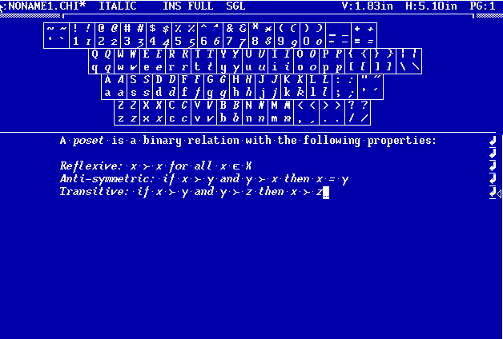
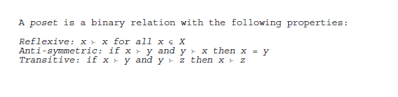
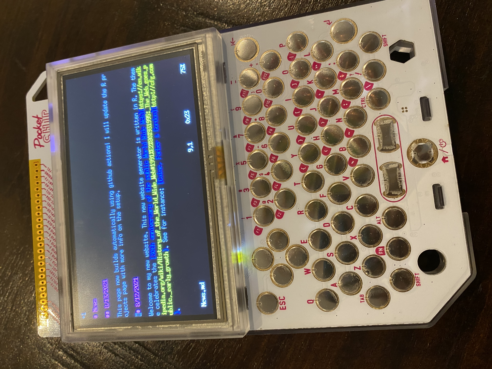

Test
Andrew Dustan, Kristine Koutout and I have completed a new working papge: Reduction in Belief Elicitation.
I am on gopherspace at gopher://gopher.gregcleo.com:70/.
ChiWriter is a document editor for MsDos with built-in math fonts written by Cay Horstmann in 1986. It is available as abandonware on Cay Hortsmann's Website.
The look of ChiWriter inspried the theme of this page. So blue…

Here is a snip of the “printed” Postscript output.

I am now on gopherspace at gopher://gopher.gregcleo.com:70/.
I am happy to announce VU Meets and Joins a new Theory/Experimental brown bag series at Vanderbilt. We meet every other Wednesday at 12pm in Calhoun 413B.
Our first meeting is tomorrow 10/20/21:
If you are interested in presenting to our group, reach out to me. We are open to outside speakers either in-person or via zoom.
I have added an updated working paper Subgame Perfect Coalition Formation (joint with Eugene Vorobeychik and Myrna Wooders).
In this paper, we analyze a dynamic coalition formation game, the “seqeuential proposer game”. A player proposes a coalition. The players in that coalition accpet or reject the proposal. As long as each player is able to make enough proposals, the equilibrium outcome is Pareto optimal.
I will be presenting “Minimal Experiments” (joint with PJ Healy) on 10/4/21 at The University of Tennessee.
Matching Soulmates has been accepted in the Journal of Public Economic Theory. The latest version of the paper is available here.
This page now builds automatically using github actions! This lets me update the page and add content from anywhere. In fact, I posted this update from my Pocket C.H.I.P.

Welcome to my new website. This new website generator is written in R. The theme celebrates the 30th anniversary of the public World Wide Web. See for instance: Caine, Farber & Gordon.